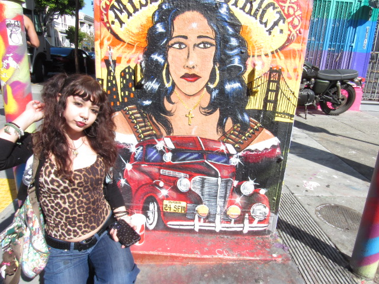

I am a third year student at San Francisco State University and my major is Visual Communications. I am 21 years old, I was born Decemeber 17th, 2004 which makes me a Saggitarius. I was born and raised in Las Vegas, Nevada, but my parents met here in San Francisco and lived here for a while before I was born. I come from a family of 5 including me, my brother, my sister and my mom and dad. My older brother was born and raised in South San Francisco and my older sister was also born in Las Vegas like me. I also have two pets, a chihuahua named Lulu and a parti yorkie named Yuki. I am mixed race, my mom is Mexican and my dad is half Japanese half Irish. Some of my hobbies include listening to music, hanging out with my friends, making art, and exploring the city. I love living in San Francisco and I hope I can continue living here after I graduate from college. My favorite places to go to in San Francisco is Fisherman's Warf, The Mission and Dolores. I think one of the best spots to eat in the city is Yamo near dolores.